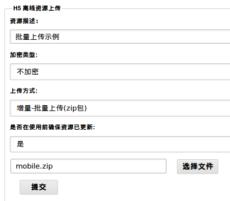
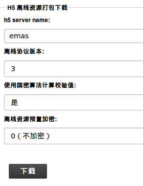

- Introduction
- 1. EMP5.3技术白皮书
- 2. EMP 安全
-
3.
EMP界面开发规范
- 3.1. 变更记录
- 3.2. CSS样式
- 3.3. 属性
-
3.4.
界面标签
- 3.4.1. 控件支持属性和样式对照表
-
3.4.2.
基础标签
- 3.4.2.1. A
- 3.4.2.2. B & Strong
- 3.4.2.3. Body
- 3.4.2.4. Br
- 3.4.2.5. Div
- 3.4.2.6. Form
- 3.4.2.7. I & Em
- 3.4.2.8. Img
- 3.4.2.9. InputButton
- 3.4.2.10. InputCheckbox
- 3.4.2.11. InputHidden
- 3.4.2.12. InputPassword
- 3.4.2.13. InputRadio
- 3.4.2.14. InputSegment
- 3.4.2.15. InputSwitch
- 3.4.2.16. InputText
- 3.4.2.17. Label
- 3.4.2.18. Richtext
- 3.4.2.19. Select & Option
- 3.4.2.20. Table & Tr & Td & Th
- 3.4.2.21. Webview
- 3.4.3. SDK定制说明
- 3.4.4. 定制标签
- 3.5. 布局与刷新
-
3.6.
Lua
-
3.6.1.
基础Lua库
- 3.6.1.1. accelerometer
- 3.6.1.2. audio
- 3.6.1.3. corp
- 3.6.1.4. database
- 3.6.1.5. document
- 3.6.1.6. file
- 3.6.1.7. gesture
- 3.6.1.8. gps
- 3.6.1.9. history
- 3.6.1.10. http
- 3.6.1.11. json
- 3.6.1.12. kv
- 3.6.1.13. location
- 3.6.1.14. offline
- 3.6.1.15. qrcode
- 3.6.1.16. screen
- 3.6.1.17. system
- 3.6.1.18. timer
- 3.6.1.19. utility
- 3.6.1.20. video
- 3.6.1.21. window
- 3.6.2. 界面标签支持的Lua接口
- 3.6.3. 动画
- 3.6.4. RYTL脚本库
-
3.6.1.
基础Lua库
- 3.7. javascript
- 4. EMP开发配置
- 5. Migrate
- 6. EWP5.3管理后台功能说明文档
- 7. EWP API
- 8. EWP Manual
- Published using GitBook
离线资源多App支持服务器配置使用文档
1 概述
为支持多App服务的功能，EWP做了一些修改，本文将介绍如何通过配置和操作，来实现多App服务的。
2 多App服务器结构

图2-1 多App服务器结构
每一个EWP AppServer都管理自己的离线资源文件和描述文件，当客户端下载离线资源时，EWP平台会根据配置选择与AppServer的连接方式，去获取对应AppServer的离线资源。
由于H5 AppServer的特殊性，其离线资源需要打包上传到EWP平台，具体操作在后面介绍。
3 转发服务配置
转发服务的配置，统一配置在ewp.conf文件的{offline, Options}中。下面分别介绍EWP平台和EWP AppServer的配置。
3.1 EWP平台配置示例
3.1.1 ewp.conf配置
EWP平台离线资源的配置在ewp.conf文件的{offline, Options}中。
根据需求，在Options中追加{redirect, ReOptions}配置项，可实现对多AppServer的转发功能。
%% configurations for EMP offline
{offline, [
...
{redirect, [
%{handler, Mod}, %% 全局指定转发处理模块，可自定义转发逻辑，
%% 配置此选项后，下面的配置项无效
{emas, [ %% 配置需要转发请求的AppName
%% -----------------转发连接相关功能项配置--------------------
{host, "192.168.64.220:4003"}, %% AppServer的主机地址
{type, ewp}, %% App服务类型ewp/h5
%{handler, Mod}, %% 指定转发处理模块，可自定义转发逻辑，
%% 不配置时使用EWP默认逻辑。
{protocol, http}, %% 基于哪种协议进行下载转发。
{tcp_port, 5090}, %% 使用tcp协议转发时使用的端口号。
{max_connections, 100}, %% 该App下载资源占用的最大连接数。
%% -----------------转发缓存相关功能项配置--------------------
{cache, true}, %% 缓存功能开关。
{cache_expiry, 4000}, %% 缓存有效期。
{max_mem, 102400}, %% 缓存的最大内存。
{pool_size, 4}, %% 工作进程池大小。
{worker_timeout, 10}, %% 回调处理的超时时间。
{opaque, [{app, emas}]} %% 回调缓存读取文件的自定义参数。
]}
]}
]}.
3.1.2 配置参数解释
3.1.2.1 全局自定义转发配置
全局配置结构：
{redirect, [
{handler, Mod} %% 全局指定转发处理模块，可自定义转发逻辑
]}
在转发功能里，需要用到2个回调函数：
1.获取远程离线描述文件
get_remote_desc(From, Ver, Platform, Resolution, Type) -> {ok, ServerJson} | {error, Reason}
Types:
From = term() %% 客户端传送的AppServer标识，格式可自定义
Ver = "3" %% 离线版本，"0"|"1"|"2"|"3"，最新版本为"3"
Platform = string() %% 平台，"android"|"iphone"|"wp"|"qt"
Resolution = string() %% 分辨率，如："320*480"
Type = sca | normal %% 算法校验方式(国密|非国密)
ServerJson = string() %% Json结构的描述文件内容
Reason = string() %% 错误提示
2.获取远程离线资源
get_remote_resource(From, FilePath) -> {ok, Res} | {error, Reason}
Types:
From = term() %% 客户端传送的AppServer标识，格式可自定义
FilePath = string() %% 文件路径
Res = binary() %% 文件内容
Reason = string() %% 错误提示
3.1.2.2 EWP默认转发配置
配置结构为：
{redirect, [
{AppName1, [ %% AppName1(全局唯一)
Options %% 配置项
]},
{AppName2, [ %% AppName2
Options %% 配置项
]}
]}
Options参数配置以及功能：
- {host, Host}
AppServer的主机地址，如"192.168.64.220:4003" - {port, PortNum}
http协议转发时使用的端口号，如果配置此项，{host, Host}的主机地址就不能配置端口，http的URL拼接方式："http://" + Host + ":" + PortNum或"http://" + Host - {type, Type}
App服务类型，Type = ewp(默认) | h5 - {handler, Mod}
指定转发处理模块，可自定义转发逻辑，当不配置此选项时，使用默认值，
Mod = ewp_offline_redirect(默认) | atom() - {protocol, Type}
App下载转发协议类型，Type = http(默认) | tcp，目前只支持http - {tcp_port, PortNum}
使用tcp协议转发时使用的端口号 - {cache, Type}
缓存功能开关。Type = false(默认) | true | fixed
true: 开启缓存，可变有效期，失效时间点为最近一次访问时间戳 + cache_expiry
fixed: 开启缓存，固定有效期，失效时间点为第一次访问时间戳 + cache_expiry
false: 关闭缓存。 - {cache_expiry, Expiry}
缓存有效期，单位为秒。默认300 (5分钟) - {max_mem, MaxMem}
缓存的最大内存，单位为K。默认为100*1024 (100M)。 - {pool_size, PoolSize}
工作进程池大小。默认与Erlang调度器数量一致(erlang:system_info(schedulers)) - {worker_timeout, Timeout}
get_file_content回调处理的超时时间，单位为妙。默认10 (10秒)
注意，超时后工作进程仍会执行完成get_file_content方法，而不会中断。因此get_file_content应避免死循环或僵死，防止无工作进程可用的情况发生。 - {opaque, ArgOptions}
回调缓存处理的自定义参数，可在自定义回调处理中使用。
注：EWP默认回调处理必须配置{app, AppName}。
{handler, Mod}自定义转发处理模块及回调函数
在转发功能里，需要用到2个回调函数：
1.获取远程离线描述文件
get_remote_desc(From, RemoteConf, Ver, Platform, Resolution, Type) -> {ok, ServerJson} | {error, Reason}
Types:
From = AppServerName() %% AppServerName
RemoteConf = Options() %% AppServer所有配置项
Ver = "3" %% 离线版本，"0"|"1"|"2"|"3"，最新版本为"3"
Platform = string() %% 平台，"android"|"iphone"|"wp"|"qt"
Resolution = string() %% 分辨率，如："320*480"
Type = sca | normal %% 算法校验方式(国密|非国密)
ServerJson = string() %% Json结构的描述文件内容
Reason = string() %% 错误提示
2.获取远程离线资源
get_remote_resource(From, RemoteConf, FilePath) -> {ok, Res} | {error, Reason}
Types:
From = AppServerName() %% AppServerName
RemoteConf = Options() %% AppServer所有配置项
FilePath = string() %% 文件路径
Res = binary() %% 文件内容
Reason = string() %% 错误提示
3.2 EWP AppServer配置示例
3.2.1 ewp.conf配置
EWP AppServer的离线资源服务的配置在ewp.conf文件的{offline, Options}中。
根据需求，在Options中追加{platform_host, Host}配置项，实现在改变AppServer离线资源时，能够即使清空EWP平台的缓存。
%% configurations for EMP offline
{offline, [
...
{platform_host, "192.168.64.221:4002"}
]}.
3.2.2 配置参数解释
Options参数配置以及功能：
- {platform_host, Host}
EWP平台的主机地址，为了在变更本地离线资源时，能够及时通知EWP平台清除离线资源文件的缓存。
4 H5 AppServer 离线资源管理
4.1 H5离线资源
H5 AppServer的离线资源需在EWP管理后台上传，上传方法为：
- 将所有资源保存在H5 App命名的文件夹下，如h5_app1/
- 将该文件夹压缩成zip包
- 将zip包在管理后台上传
H5信息资源上传入口: 登录EWP平台的管理后台 -> 资源管理(或开发人员菜单) -> H5离线存储 -> H5 离线资源上传

图4-1 H5信息资源上传
上传成功后，会在public/h5_resources/desc和public/h5_resources/sca_desc这两个路径下生成H5 App相关的离线资源描述文件。并将离线资源保存在public/h5_resources路径下。
4.2 预置资源下载
在上传了H5 AppServer的信息资源之后，就可以下载H5的预置资源了。
H5离线资源下载入口: 登录EWP平台的管理后台 -> 资源管理(或开发人员菜单) -> H5离线存储 -> H5 离线资源打包下载

图4-2 H5离线资源下载